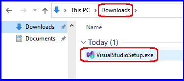
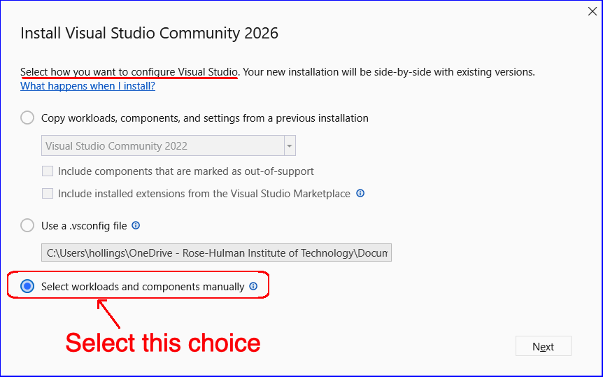
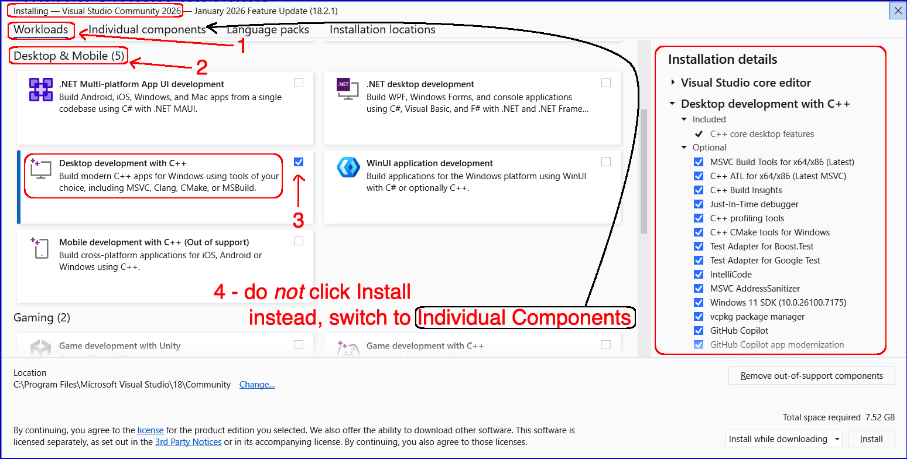
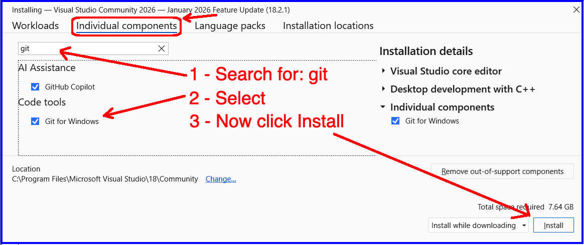
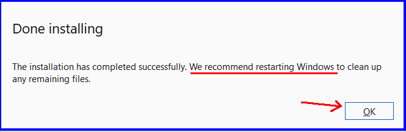
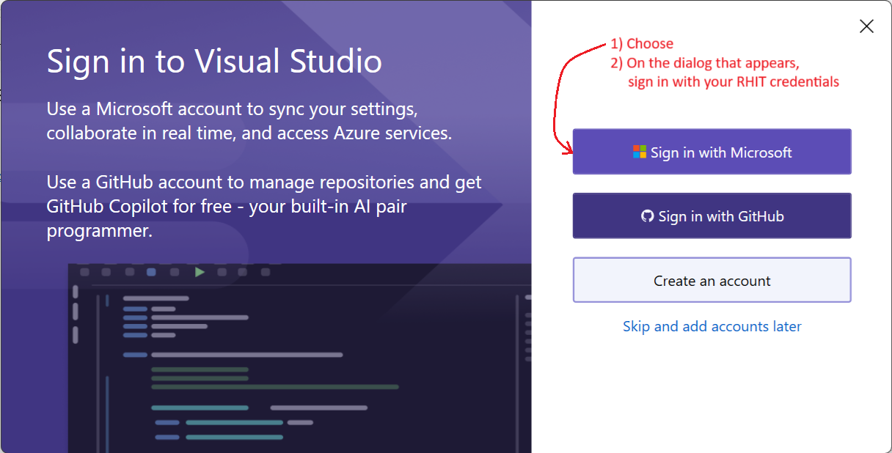

Install Microsoft Visual Studio Community 2026
- In CSSE373 this Quarter we'll be developing software in C++ using VS2026 as our IDE
- Other IDEs will also be used, but they will be available through the Internet
- Below are a number of screen shots that should help you with finding and installing VS2026
If you already have VS2026 installed, then update it now.
- My apologies to:
- MacBook users ... you can try the Mac version of Visual Studio, but it doesn't support C++, ultimately you're going to need to use a PC and Visual Studio
- VSCode users ... you can try to set up a C++ environment, but there are a number of assignments that directly depend on Visual Studio, ultimately you're going to need to use Visual Studio
Steps 1 & 2 :
- Navigate to: visualstudio.microsoft.com/downloads
- Download the VS2026 Community Edition

Step 3:
- Find the download on your machine and double click the .exe that was downloaded

Step 4:
- In this dialog choose to Select workloads and components manually

Step 5:
- In Workloads choose Desktop develoment with C++

Steps 6 - 8:
- Switch to the Individual components tab
- Check the box for Git for Windows under Code Tools
- Click Install

Step 9:
- Done with installation

Step 10:
- Find VS2026 on your machine and start it up
